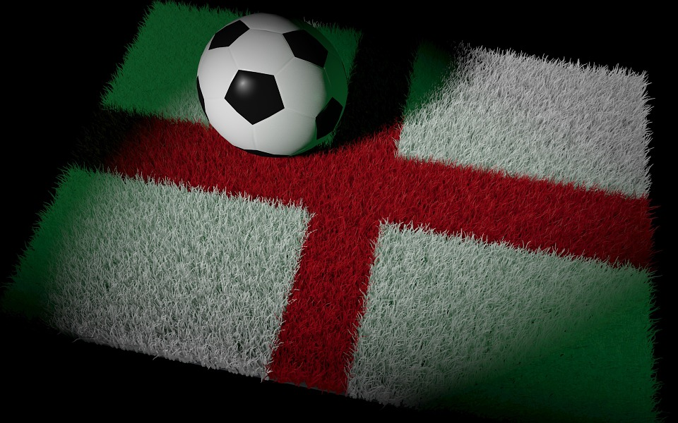
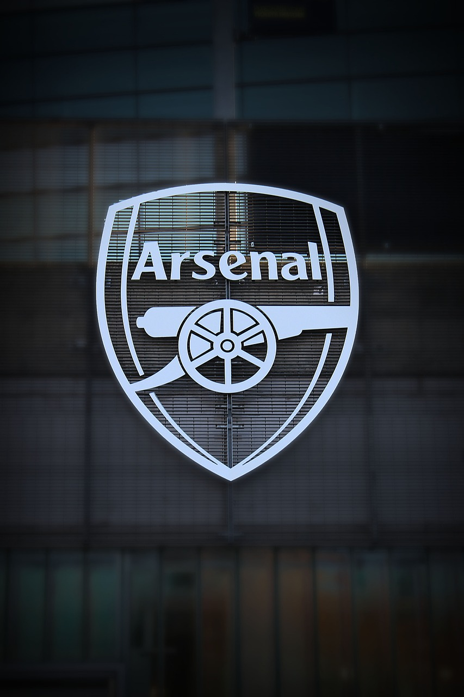
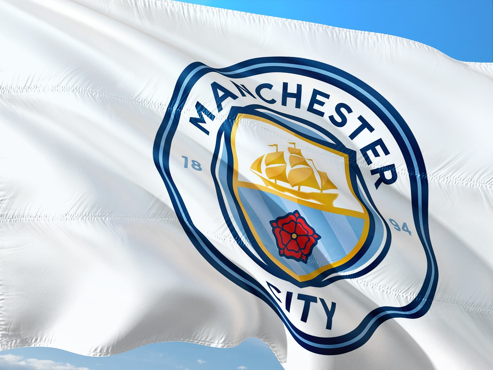

Valioliigassa pelataan yhteensä 38 peliä, joten pelejä on enään vähän jäljellä. Mestaruudesta taistelevat lähinnä Arsenal ja Manchester City, Liverpoolilla myös pieni mahdollisuus. Valioliigasta putoaa kolme viimeistä joukkuetta, joten Burnley, Luton ja Nottingham taistelevat ensi vuoden sarjapaikasta. Valioliigan maalipörssiä johtaa Manchester Cityn Erling Haaland, joka on tehnyt 21 maalia.
Liverpool-West Ham päättyi tasapeliin, joka oli Liverpoolin mestaruuden kannalta suuri kolaus. Arsenal ja Manchester City voittivat todella tärkeät pelit vieraskentällä mestaruuden kannalta. Burnley sai yhden tärkeän pisteen putoamisen kannalta, kun he pelasivat tasapelin.
Kolme ensimmäistä peliä ovat putoamisen kannalta isoja pelejä. Kolme viimeistä peliä ovat tärkeitä mestaruuden kannalta.